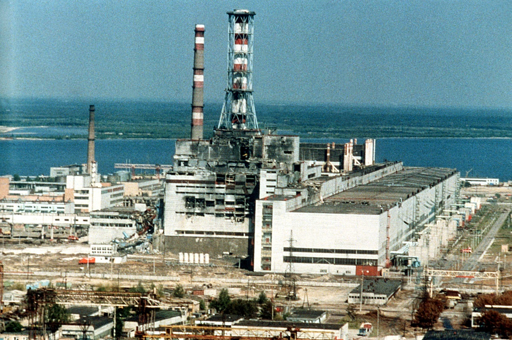
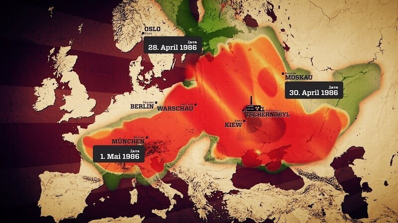
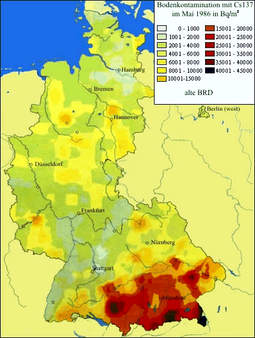
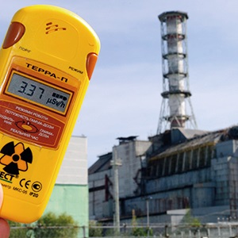
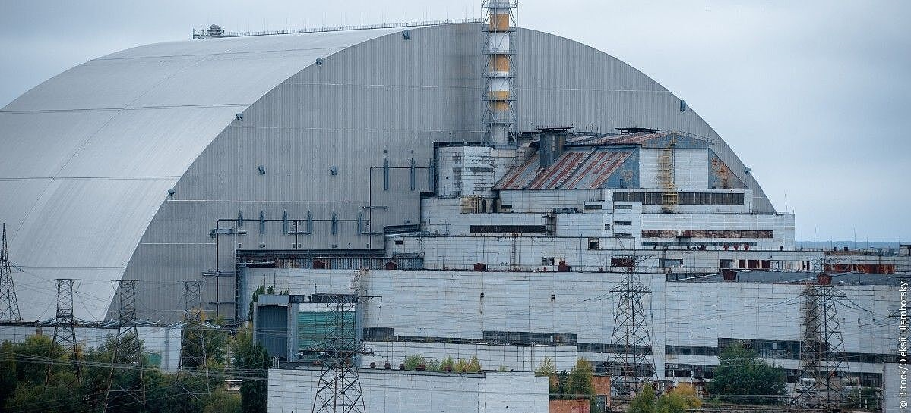

Informationstext: Was geschah in Tschernobyl?

In der Nacht vom 26. April 1986 kam es im Kernkraftwerk Tschernobyl (heutige Ukraine) zu einem schweren Reaktorunfall. Bei einem Sicherheitstest liefen mehrere Schutzmechanismen nicht wie vorgesehen. Der Reaktor wurde instabil, die Leistung stieg stark an, und es kam zu einer Explosion mit anschließendem Brand. Dadurch wurden große Mengen radioaktiver Stoffe in die Atmosphäre freigesetzt. Der Unfall gilt als einer der schwersten in der Geschichte der Kernenergie.

Die radioaktive Wolke breitete sich in den folgenden Tagen über große Teile Europas aus. Wo Regen fiel, lagerten sich radioaktive Partikel besonders stark am Boden ab. Deshalb waren einige Gebiete stärker betroffen als andere. Für den Unterricht ist das wichtig: Nicht nur die Entfernung zum Kraftwerk entscheidet über die Belastung, sondern auch Wetter, Windrichtung und Niederschlag.

Auch in Deutschland wurden Folgen messbar. Bestimmte Böden, Pilze oder Wildtiere können radioaktive Stoffe über lange Zeit speichern. Deshalb gibt es bis heute in einzelnen Regionen Kontrollen und Empfehlungen. Bild 3 hilft zu verstehen, warum das Thema nicht nur "weit weg" ist: Die Auswirkungen wurden und werden auch in Mitteleuropa beobachtet.

Für den Strahlenschutz gilt: Messen, Bewerten, Schützen. Radioaktive Strahlung ist unsichtbar, deshalb sind Messgeräte entscheidend. Behörden und Wissenschaft untersuchen Luft, Wasser, Boden und Lebensmittel regelmäßig. So kann man Risiken besser einschätzen und Schutzmaßnahmen gezielt festlegen.


Warum ist Tschernobyl bis heute wichtig?
Tschernobyl zeigt, dass technische Systeme trotz Sicherheitskonzepten versagen können, besonders wenn mehrere Risiken gleichzeitig auftreten. Der Unfall hatte nicht nur technische, sondern auch gesundheitliche, ökologische und gesellschaftliche Folgen. Deshalb ist das Thema im NT-Unterricht zentral: Es verbindet Physik, Technik, Umwelt und Verantwortung.
Aufgabenstellung: DINA3-Plakat zu Tschernobyl
- Stellt den Ablauf als Pfeilkette dar (z. B. mit ->): Sicherheitsprobleme und Testfehler -> Leistungsanstieg im Reaktor -> Explosion und Brand -> Freisetzung radioaktiver Stoffe -> Verstrahlung und Evakuierung -> Sperrzone und Langzeitfolgen.
- Erklärt alle 6 Bilder jeweils in genau 1 vollständigen Satz.
- Nennt mindestens 3 konkrete Folgen für die Bevölkerung.
- Nennt mindestens 2 technische Lehren für Reaktorsicherheit und Notfallplanung.
- Formuliert einen eigenen Merksatz zu: "Warum ist Tschernobyl ein Thema für Natur und Technik?"
Präsentation: Erstellt ein DINA3-Plakat, fotografiert es mit dem iPhone und präsentiert es über Apple TV. Jede Person in der Gruppe muss etwas vortragen.